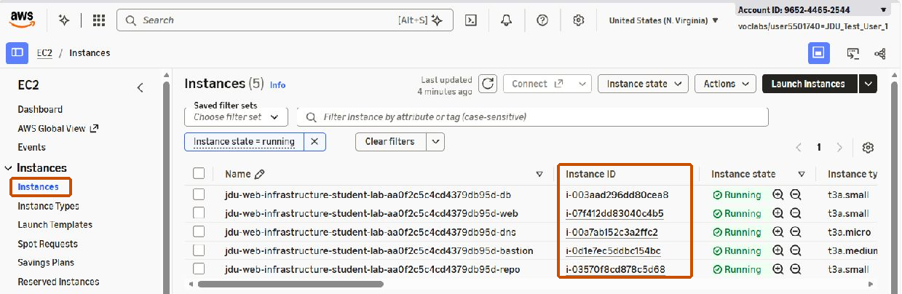

P0 Shaxsiy muhit va buyruqlarni bajarish joyi
Mashqlar P0–P6 · Topshiriqlar M0–M6
Mos topshiriq: M0.
Nimani o‘rganamiz
CloudShell, Windows va beshta Ubuntu serverni farqlash; kerakli serverga SSM orqali kirish va o‘zini tekshirish.
Topshiriq
Tayyor muhitingizda beshta serverning instance ID si va rolini tekshiring. Qaysi serverga va qaysi foydalanuvchi sifatida ulanganingizni aniqlang.
Serverlarga ulanish va kurs fayllari

Yashil strelka P0.2 da terminalga ulanishni, ko‘k strelkalar dastlabki sozlashda fayllarni joylashni ko‘rsatadi. Repo server Ubuntu paketlarini tarqatadi.
Practice0 da bajariladigan ishlar
O‘z AWS hisobingizni, har bir server rolini va buyruq bajariladigan muhitni tekshiring.
Dastlabki sozlashda joylanadigan o‘quv fayllari
Muhit umumiy kod bilan yaratilgach, ilova va DB uchun SQL fayllari bor catalog-app.tar.gz arxivi Web va DB serverlaridagi /var/lib/jdu-web/lesson-resources-r1 katalogiga joylangan bo‘ladi. Xavfsizlik uchun Web serverdan internetga chiquvchi HTTPS ulanishlari cheklangan, shuning uchun skript fayllarni quyidagi yo‘l orqali yetkazadi.

Muhit umumiy kod orqali yaratilganda, CloudShell o‘quv fayllarini GitHub dan yuklab oladi va SSM orqali Web hamda DB serverlariga joylaydi.
Yechim namunasi (bajarish tartibi)
P0.1 Beshta serverning instance ID sini tekshirish
Bajarish muhiti:
Talabaning shaxsiy AWS Console oynasi
Maqsad va amallar:
AWS Console tepasidagi Search maydoniga EC2 deb yozib, boshqaruv oynasini oching. EC2 → Instances ro‘yxatida Name ustunidan o‘z muhitingizdagi beshta serverni tekshiring. Shu qatordagi Instance ID ustunidan i- bilan boshlangan to‘liq ID ni ko‘ring.

C3 bobidagi 3-4-rasm. EC2 → Instances ni oching va kerakli server qatoridan Instance ID ni tekshiring.
P0.2 CloudShell dan SSM orqali Web serverga ulanish
Bajarish muhiti:
Talabaning shaxsiy AWS hisobidagi CloudShell
Maqsad va amallar:
Birinchi buyruqdagi i-YOUR-WEB-INSTANCE-ID o‘rniga P0.1 da tekshirilgan Web serverning Instance ID sini yozing va buyruqni CloudShell da bajaring. Ulangach, serverni dastlabki sozlashda joylangan /etc/jdu-web/bootstrap.json faylidan rolni o‘qing. role maydonida server vazifasi saqlanadi. web qiymati Web serverga ulanganligingizni tasdiqlaydi.
Buyruqlar: raqamlar shu qadam ichidagi tartib
# 1. CloudShell dan tanlangan EC2 ga SSM ochish; ulanishni kutish.
aws ssm start-session --target i-YOUR-WEB-INSTANCE-ID
# 2. Shu terminaldagi OS user nomini ko‘rsatish.
id -un
# 3. Bootstrap dan faqat role ni o‘qib, ulangan server vazifasini tekshirish.
python3 -c 'import json;print(json.load(open("/etc/jdu-web/bootstrap.json"))["role"])'
# 4. Joriy server session ini yopib CloudShell ga qaytish.
exit
Kutilgan natija va ma’nosi:
id -un natijasi ssm-user, fayldan o‘qilgan rol qiymati esa web bo‘ladi.
Ulangandan keyingi terminal ko‘rinishi
$ id -un
ssm-user
$ python3 -c …
web
P0.3 Tayyorlikni brauzerda tekshirish
Bajarish muhiti:
Shaxsiy PC brauzeri: Web Portal
Maqsad va amallar:
O‘qituvchi bergan havola orqali topshiriqlar sahifasini oching. Maktab Google orqali kirib, o‘z AWS hisobingizni bog‘lang. P0 ni tanlab tekshiruvni boshlang; ishlov davom etsa natijani yangilang.
Buyruq va sozlamalar ma’nosi:
Brauzer natijani avtomatik saqlaydi. PASS/FAIL/UNKNOWN va ishlov/saqlash holatini farqlang.
Kutilgan natija va ma’nosi:
O‘z Lab, topshiriq ID va vaqtni tekshiring. Check natijalari va saqlash holatini o‘qing; tugashi va saqlanishini kuting. UNKNOWN o‘lchab bo‘lmagan holat, muvaffaqiyat emas.
Ishlamasa:
Yordam uchun check ID, vaqt va server rolini yozing. Token, parol va shaxsiy URL ni ulashmang.
P0.4 RDP orqali bastion ish stolini ochish
Bajarish muhiti:
Talabaning Windows PC si (umumiy hisob)
Maqsad va amallar:
EC2 dagi hozirgi bastion public IPv4 ni ishlating. Windows+R ni bosib mstsc /prompt kiriting va Enter bosing. Computer ga IP, user ga labuser, parolga boshlang‘ich o‘rnatishda belgilangan shaxsiy RDP parolini kiriting; Windows paroli emas. Credentials ni saqlashni tanlamang. Ko‘k xrdp login chiqsa Session=Xorg va labuser ni tekshiring.
Buyruqlar: raqamlar shu qadam ichidagi tartib
# 1. Windows RDP ni hisob ma’lumotlarini so‘rash bilan ochish.
mstsc /prompt
Buyruq va sozlamalar ma’nosi:
RDP bastion ekrani va kiritishni uzatadi. RDP ichidagi Firefox request i Windows emas, bastiondan chiqadi. Klaviatura tartibi paroldagi belgilarga ta’sir qiladi; interfeys tili va keyboard layout alohida sozlamadir.
Kutilgan natija va ma’nosi:
Ubuntu bastion ichida Xfce va Firefox ochiladi; bu Windows browser idan boshqa. labuser da sudo yo‘q: qurishni CloudShell → SSM/ssm-user orqali bajaring.
Ishlamasa:
Login failed bo‘lsa user nomi va klaviatura tartibini tekshiring. Parolni chat ga yubormang. Ulanmasa joriy IP va ruxsatli CIDR ni o‘qituvchi bilan tekshiring; 3389 ni hammaga ochmang. RDP ni yopishdan oldin ishni saqlang.
Tushunishni tekshirish (ballsiz)
Web SSM session ichida DB qadamlarini kiritsangiz, qaysi server o‘zgaradi?
Izoh:
Joriy Web o‘zgaradi. Exit bilan CloudShell ga qaytib DB instance ID ga qayta ulaning.